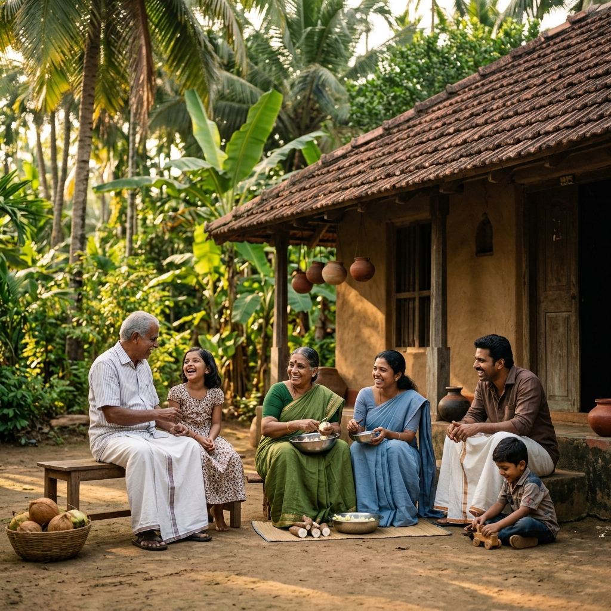

Over 5,000 community members supported in 2023.
Our Heart is in the Soul of Kerala
From the tranquil backwaters to the vibrant hills of Wayanad, we are dedicated to empowering Kerala's local communities. Our mission is built on transparency, compassion, and a deep-rooted commitment to sustainable local development.
We believe in grassroots change. By working directly with families in districts like Idukki and Alappuzha, we ensure that every contribution fuels measurable progress across God's Own Country.
Compassion
At the core of everything we do is a deep-seated empathy for the challenges faced by our neighbors.
Transparency
We maintain open-book policies for all our donations and project funding, ensuring every dollar counts.
Sustainability
We don't just provide temporary fixes; we build systems that empower communities to thrive independently.
Our Mission
"To foster resilient Kerala communities through transparent resource allocation and sustainable stewardship of our natural heritage, ensuring no one is left behind in our shared journey toward a greener future."
Our Vision
"A world where every community has the tools to sustain itself, where transparency is the standard for social impact, and where nature and humanity thrive in perfect harmony."
What We Do
Transforming lives through focused intervention programs.
Backwaters
Sustainable aquatic ecosystems and support for houseboat communities in Alappuzha.
Organic Farms
Empowering hill station farmers in Munnar and Idukki with sustainable techniques.
Coastal Care
Comprehensive mangrove restoration and coastal protection across Kochi's shores.
Volunteers
Direct engagement opportunities for meaningful social work.
25k+
Kerala Lives Impacted
250+
Active Projects
15+
Global Awards
100%
Transparency

"Change doesn't happen in isolation. It's the collective heartbeat of our community that drives every project we undertake. Together, we aren't just imagining a better world—we're building it."
Community Stories
The heart of our mission in Kerala.
Our Strategic Approach
1. Listen
Understanding unique local needs through active listening.
2. Collaborate
Co-designing solutions with the people we serve.
3. Implement
Resource-efficient execution of high-impact programs.
4. Measure
Rigorous tracking of long-term sustainable outcomes.
Transparency & Trust
We believe that accountability is non-negotiable. Our operations are fully audited, and we invite our donors to see exactly where their contributions go.
Registration ID
NPC-2024-9988-EC
Annual Reports
Download 2023 Impact Report (PDF)Donation Confidence
- check_circle 92% of all donations go directly to program services.
- check_circle Annual independent third-party financial audits.
- check_circle Real-time project tracking available for recurring donors.
Be the Change You Wish to See
Whether you give your time or your resources, your support fuels the transformation of communities around the globe.